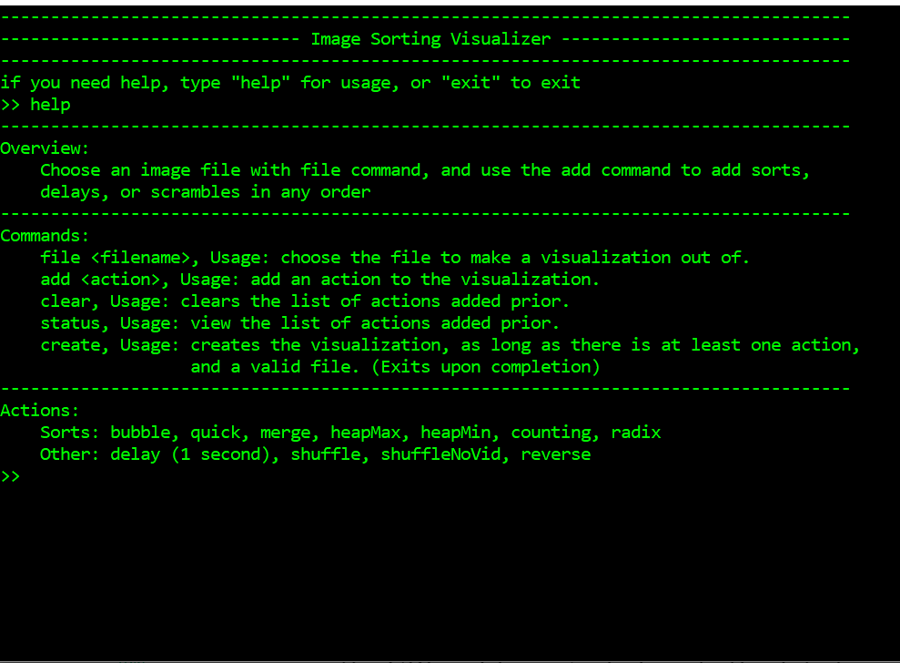

I am an undergraduate computer science student at McMaster University, I love programming, hacking, classic liturature, sports, and music. This website mainly focuses on the first two. I interned at Intel from May 2020 to August 2021, and at Questrade from May 2022 to August 2022. In the meantime I created the projects listed below.
RoomE was a capstone project on my Computer Science degree. It was a robot built from the ground up which would out an area using lidar via exploration. I created the code for a majority of the systems including the pathfinding algorithm, the frontier exploration algorithm, interpreting the lidar data, and communicating via USB to the drive train system. The project was a great challenge and included many opportunities to solve algorithmic problems as well as the practical issues that come up with putting a large project together.

Twitch Clipper was a scraping bot I made to create 10 minute videos of highlights from twitch streams. I had the idea when I was watching a video of twitch clips put into a compilation and thought that it was such a simple task that I could probably automate it. The end result was a bot that given a list of channels and a game will find recent popular clips for those channels and edit together a video of those clips.

Sorting Visualizer was one of my first personal projects. I made it in order to explore sorting algorithms in an interesting way. I was inspired by videos on Youtube called "The sounds of sorting", wherin bars of various lengths were scrambled and sorted with different algorithms, and each comparison and swap would play a sound. My take on this was to create a program which would create videos of images being scrambled and then sorted with the sorting algorithm or algorithms of the user's choice.
